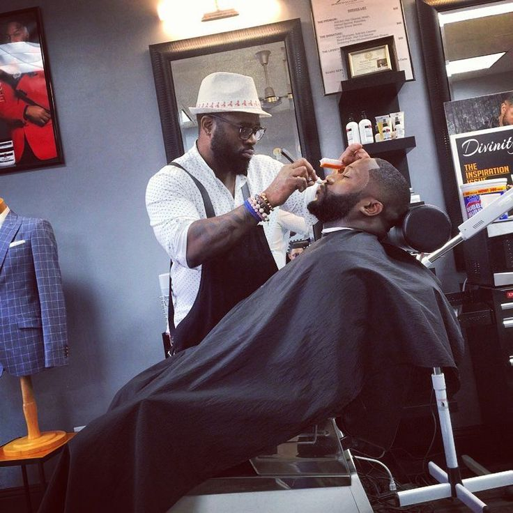

Meet Our Barbers

Loago Motlhagodi
Master Barber
15 years experience
Gofiwa Gabanatiro
Senior Barber
10 years experienceServing the community with exceptional grooming services since 2010

Classic Cuts Barbershop was founded in 2015 with a simple and clear goal which is to provide exceptional grooming services in a welcoming, traditional barbershop atmosphere. Our team of experienced barbers combines classic techniques with modern styles to ensuring every client leaves looking great and feeling their best. We take pride in building good and lasting relationships with our clients and being an integral part of the community. Whether you're looking for a traditional cut, a modern fade, expert beard grooming, our skilled barbers are here to help you achieve your desired look.We provide the best service that has ever been in this town.
Over 10 years of professional barbering experience serving our community with dedication and expertise.We served different people with different views and they all been enjoying our service.
Our team is one of the best you will ever find in the country, our talented team of licensed barbers stay current with the latest trends and techniques in men's grooming.
We prioritize your satisfaction and strive to create a comfortable, welcoming environment for all our clients.
Master Barber
15 years experience
Senior Barber
10 years experience